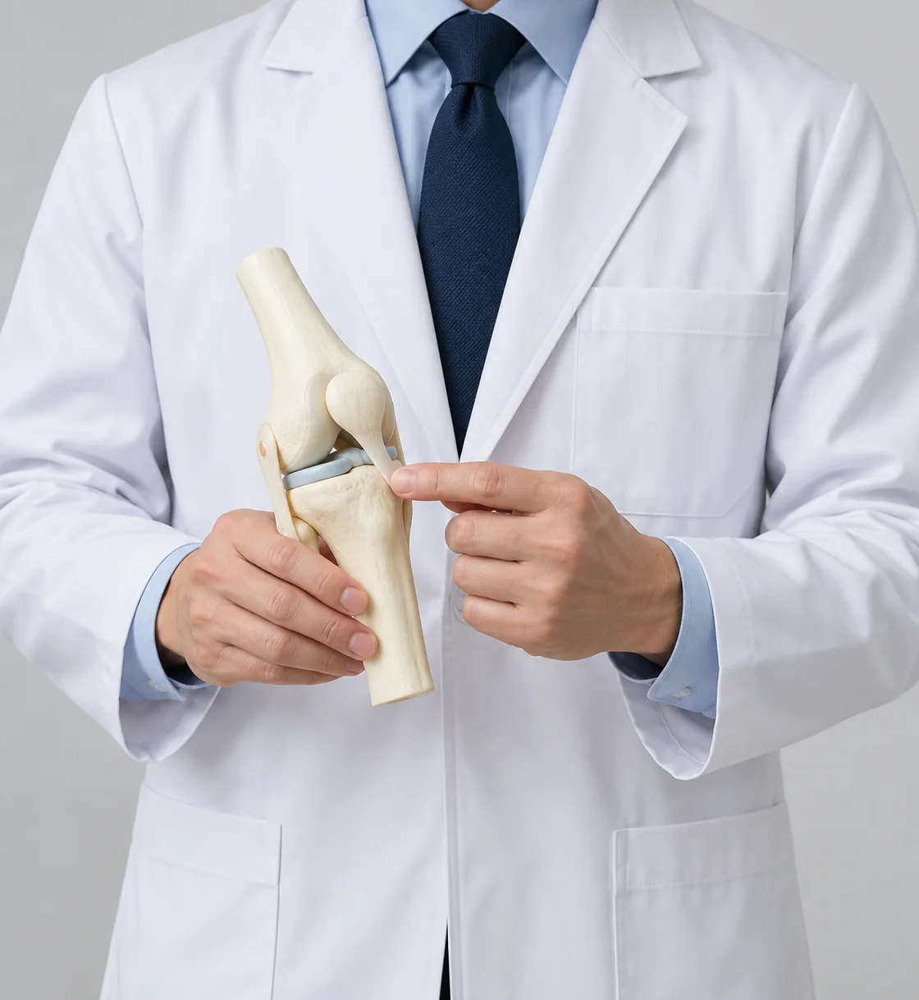

Completion of undergraduate medical education and foundational clinical training.
Postgraduate study focused on joint disease and musculoskeletal research.
Overseas clinical fellowship in the assessment of sports-related injuries.
Teaching and clinical work within an orthopaedic education programme.
Advanced clinical training in joint replacement and postoperative rehabilitation.
Research fellowship addressing biomechanics and the structure of human joints.
Participation in clinical education and patient care at a medical teaching centre.
Orthopaedic practice combined with the training of junior clinicians.
Knee surgery and joint disease care within a specialist clinical team.
Academic Exchange and Clinical Learning
Academic exchange in medical research and clinical education.
Participation in professional discussion of orthopaedic disease and treatment.
Editorial review of educational material for clinicians.
Collaborative discussion within a musculoskeletal research forum.
Planning of research presentations and orthopaedic case-review meetings.
Academic exchange concerning arthroscopic assessment and treatment.
Clinical discussion of knee disorders and operative case reviews.
Contribution to the review of knee-joint educational resources.
International educational exchange and continuing orthopaedic training.
Critical reading of international clinical research and participation in discussion.
Professional study of knee replacement and reconstructive techniques.
Research discussion on computer-assisted orthopaedic surgery.
Participation in the planning of specialist joint-surgery education.

Caring For Life Essential to the World, 곧은정형외과
International Research Topics for Clinical Learning
Protecting the neurovascular structures during anterior exposure of the shoulder. The discussion follows the course of the brachial plexus and axillary artery in relation to instruments placed beside the glenoid.
Changes in collagen-related gene expression as cartilage cells adapt to repeated laboratory culture. Particular attention is given to alternative splicing and the loss of the original chondrocyte phenotype in a single-cell layer.
Approaches to avoiding axillary nerve damage when reconstructing the front of the shoulder. Splitting the subscapularis is considered alongside the anatomical landmarks used to plan a safe surgical exposure.
Recognising vascular and nerve complications associated with arthroscopic procedures in the knee. The material separates the structures at risk from the clinical observations that require further assessment after surgery.
Microscopic features of the shoulder capsule in stable and unstable joints. Tissue appearances after an unsuccessful thermal tightening procedure are considered separately from those found in an unaffected capsule.
Developments in shoulder joint replacement and the questions that remain when choosing a reconstruction. Implant concepts are discussed together with the condition of the surrounding bone and soft tissues.
Arm and shoulder injuries in young people who participate in sport. The review distinguishes the demands of a growing skeleton from the training patterns and repeated movements that bring athletes to a clinic.
Interpreting clinical manoeuvres used when an injury to the upper glenoid labrum is suspected. Findings from individual tests are considered in the context of the patient's history and the rest of the shoulder examination.
Assessment of a kneecap that repeatedly moves away from its usual track. Symptoms, alignment and the structures that restrain the patella are brought together before considering management options.
The throwing shoulder from initial examination through treatment planning. Motion, strength and the pattern of symptoms are considered with the particular loading created by a repeated overhead throwing action.
Different patterns of injury around the superior labrum and their clinical presentation. Classification is linked to symptoms and examination findings rather than treating every labral abnormality as the same condition.
Unusual combinations of tissue damage after the knee is forced beyond its normal extension. The case-review topic focuses on looking beyond the most obvious injury and accounting for associated structures.
Variations in the shape and attachments of the upper-front part of the glenoid labrum. Distinguishing anatomical diversity from a traumatic lesion is the central issue in interpreting these observations.
Questions that arise when reviewing recovery after repair of the superior shoulder labrum. The material considers the original lesion, the repair and the functional measures used during follow-up.
Partial damage to the tendon at the front of the rotator cuff identified during shoulder arthroscopy. Tear extent and its relationship to the remaining tendon are described as separate elements of the assessment.
Recreating the layered structure of joint cartilage in an experimental tissue model. Cell organisation and differences between superficial and deeper regions form the basis of the research discussion.
Cartilage formation by marrow-derived stromal cells inside a light-cured hydrogel. The educational focus is how a three-dimensional support can be studied without assuming that laboratory behaviour predicts a clinical outcome.
Why the definition of shoulder instability changes the number and type of cases assigned to a diagnosis. Clinical laxity, reported symptoms and instability in more than one direction are considered independently.
Experience of the operating surgeon as one factor in evaluating shoulder replacement care. Clinical recovery, resource use and the limits of comparisons between different surgical practices are discussed together.
Contact between structures inside the shoulder during forward elevation. The topic examines how the position of the arm can alter the location of internal impingement and the symptoms reported during movement.
Mechanical testing of fixation on the femoral side of an anterior cruciate ligament graft. The comparison centres on how the fixation construct responds to load rather than on a brand of surgical implant.
Using physical examination findings in chronic problems of the acromioclavicular joint. Each test is interpreted with its diagnostic limitations and with the location and duration of the shoulder symptoms.
Experimental pathways by which early progenitor cells acquire musculoskeletal characteristics. The discussion separates laboratory markers of differentiation from questions that would need answering before clinical use.
Cell tolerance of substances used to initiate the light-curing of hydrogels. Differences between cell populations are considered when assessing a material intended to contain living cells in an experimental model.
The extent of lateral acromial bone removal considered during rotator cuff surgery. Shoulder anatomy and the purpose of the exposure are reviewed without assuming that a larger resection produces a better result.
The condition of kneecap cartilage and the symptoms experienced around the patellofemoral joint. Structural observations are compared with function in people being assessed for knee replacement.
Failure of a resorbable cross-pin used to secure a tendon graft in ligament reconstruction. The case discussion follows the implant, the surrounding bone and the implications for evaluating later knee symptoms.
Recurrent bleeding into the knee occurring after fixation of a bony ligament avulsion. The material considers delayed presentation and how the fixation region relates to a new episode of swelling.
Comparing preoperative CT measurements with dimensions recorded during knee replacement. Consistency between imaging and operative assessment is the methodological question, alongside the sources of measurement error.
How consistently clinicians grade cartilage changes on the kneecap. Repeated observations by the same reader and differences between readers are considered as two distinct measures of assessment reliability.
Modifications to a split in the subscapularis used for anterior shoulder reconstruction. The review follows the surgical exposure and the anatomical boundaries that must remain identifiable during the approach.
Bone spurs around the patellofemoral joint and their relationship to reported symptoms. The topic asks whether visible osteophytes adequately explain function, rather than treating the radiograph as a complete clinical picture.
Maximum bending achieved after knee replacement and the ways it relates to everyday function. The material considers why a single range-of-motion value may not capture the patient's overall experience of recovery.
Designing depth-dependent organisation within engineered cartilage. Experimental strategies for distributing cells and matrix are considered in relation to the different tasks performed by layers of a natural joint surface.
Patellofemoral imaging findings in advanced knee arthritis compared with the symptoms a patient describes. The review separates radiographic severity from pain and the practical difficulty of particular activities.
Functional concerns expressed by women preparing for knee replacement. Activities that matter to the individual are considered alongside the clinical scales commonly used to describe limitation before an operation.
The position of a tibial implant stem relative to the inner cortex of the shin bone. Anatomical fit and the consequences of an offset design are considered when assessing component placement in a replaced knee.
The time course of inflammatory blood markers after replacement of one knee or staged replacement of both knees. Interpreting a result requires its timing and the operative context, not the laboratory number alone.
Patient views on decisions that arise around knee replacement. The material explores how expectations and preferences can be recorded so that a discussion of treatment includes the outcomes that matter to the person.
Selecting an anatomical line when measuring the backward slope of the tibial plateau. Several reference axes are compared to explain why a reported slope can change with the measurement method.
What joint-space width on an X-ray can and cannot reveal about patellofemoral cartilage. Imaging measurements are discussed in relation to direct observations made during treatment of advanced arthritis.
Reasons a patient may remain dissatisfied despite an uncomplicated knee replacement. Pain, activity limitations and the expectations set before surgery are considered separately in evaluating the postoperative experience.
Kneecap dimensions and the practical questions they raise during knee replacement planning. Differences in bone shape are reviewed in relation to matching the reconstruction to the available patellar anatomy.
Measuring the patellar tendon on MRI when assessing its suitability as a ligament graft. The topic concerns the dimensions that can be obtained before surgery and the limits of translating an image into operative planning.
Different sagittal reference lines used for the femur in navigated knee replacement. Understanding the axis selected by the planning method helps explain discrepancies in the resulting component orientation.
The role of therapist-guided passive movement during recovery from knee replacement. Range of motion is considered together with patient participation, functional goals and the way progress is evaluated over time.
Early functional assessment of mobile-bearing knee replacement designs. The educational comparison considers stability and movement without treating a short follow-up interval as evidence of long-term implant durability.
Accuracy of planned bone cuts and final implant positioning in computer-assisted knee replacement. The discussion distinguishes the navigation plan, execution of the resection and the component's position after fixation.
Interpreting outcomes when some patients do not return a follow-up questionnaire. The possibility that nonresponders differ from responders is considered before drawing conclusions from a mailed postoperative survey.
Features seen on MRI as a cruciate ligament injury becomes longstanding. Changes in the injured structures are discussed with the clinical history rather than using one image feature as an exact clock for the injury.
Age, imaging and symptom burden in the decision to proceed with knee replacement. Each is considered as a different aspect of surgical timing rather than a substitute for an individual clinical discussion.
Estimating whole-limb alignment from routine knee radiographs. Position during imaging, the length of bone included and the selected anatomical landmarks can each affect the estimate used in planning.
Factors associated with hip osteoarthritis in older adults. The research theme brings together population-level observations while keeping an association separate from proof that an individual factor caused the disease.
Daily limitations and satisfaction after knee replacement among women with differing activity needs. Functional measures are interpreted alongside the tasks the patient hopes to regain rather than relying on one score.
The angle of a femoral tunnel and the fixation of a hamstring tendon graft in ligament reconstruction. The discussion connects tunnel geometry with the mechanical behaviour of the graft-fixation interface.
Tracking recovery after mobile-bearing and fixed-bearing knee replacement. Repeated follow-up observations are used to distinguish early changes from the pattern of function over a longer postoperative period.
The additional contribution of local periarticular injection to pain management when both knees are replaced together. The material focuses on how a comparative study separates the injection from other analgesic measures.
Whether the relationship between knee symptoms and X-ray changes differs by sex. Radiographic findings and the patient's reported discomfort are examined as related but distinct aspects of osteoarthritis severity.
Comparing drainage placed under the skin with drainage inside the joint after knee replacement. The discussion outlines how location can be assessed alongside wound observations and the other elements of postoperative care.
How commonly used clinical scores correspond to a patient's satisfaction after knee replacement. A good numerical result and a personally meaningful recovery are considered as outcomes that may not always coincide.
Reconciling radiographic alignment with the alignment displayed by a navigation system. Differences in how a limb is positioned and referenced are considered before attributing the disagreement to the surgical correction.
Expectations of knee replacement in relation to age, social circumstances and current function. Asking about anticipated activities before surgery can help clarify which aspects of recovery the patient values most.
Depressive symptoms and the severity of discomfort reported by people with knee osteoarthritis. Mental health and musculoskeletal symptoms are assessed together while avoiding an assumption about which came first.
Radiographic features associated with symptoms in an arthritic knee that is bowed inward. The review separates alignment, joint damage and patient experience so that imaging findings retain their proper clinical context.
Patterns of knee arthritis in an older population and how they differ between men and women. The educational emphasis is on describing the affected joint compartments and the design of a population-based comparison.
Femoral tunnel length and position in different approaches to cruciate ligament reconstruction. The technique used to reach the tunnel is examined together with the anatomy that constrains the resulting graft route.
Combining local injection agents around the knee during anterior cruciate ligament reconstruction. Comparative pain assessment is discussed alongside the rest of the recovery programme and monitoring for unwanted effects.
Assessing postoperative nausea and pain within a knee replacement recovery pathway. The research topic concerns an antiemetic strategy and the outcomes used to judge its contribution to perioperative care.
Whether local injection adds benefit when several pain-management methods are already combined for knee replacement. The discussion considers the background protocol when interpreting an additional treatment's effect.
Carpal tunnel symptoms and arthritis at the base of the thumb in older adults. The review considers their coexistence and the importance of distinguishing nerve-related symptoms from pain arising within a nearby joint.
Evaluating a lower-volume periarticular injection regimen during simultaneous replacement of both knees. The focus is the comparison of pain outcomes and exposure to medication within a monitored surgical pathway.
Comparing factors associated with wound infection after hip replacement and after knee replacement. Differences between the procedures are considered when interpreting surveillance data collected across participating hospitals.
Planning screw length during a navigated opening-wedge tibial osteotomy. The discussion follows the relationship between a proposed correction, the fixation trajectory and measurements used to select the required length.
Disability of the arms and legs in relation to general health in older adults. Upper- and lower-limb function are considered separately before examining how each relates to the person's broader health assessment.
A knee that remains unable to straighten fully after replacement. Frequency, preoperative features and the relationship to later function are distinguished when reviewing residual flexion contracture.
Interpreting questions raised about reduced-dose local injection in bilateral knee replacement. The methodological discussion revisits how dose, comparison groups and pain measures affect the reading of a study.
Longer-term follow-up of residual knee flexion after joint replacement. The topic considers the persistence of a contracture and the functional observations needed to assess its relevance during recovery.
Estimating whether a cruciate ligament tear is recent or longstanding from MRI appearances. Imaging features are compared with the available clinical timeline, with attention to uncertainty in assigning the injury's duration.
The bowing of the femoral shaft and the orientation of its joint surface in knee replacement planning. Whole-limb anatomy is considered when selecting the reference for a proposed axial correction.
Changes in the use of knee replacement over a decade. Population ageing, procedure counts and the limitations of administrative data are part of the discussion about how surgical use can be described over time.
Assessing knee function for people whose daily activities frequently involve sitting or moving near floor level. The topic considers how an evaluation tool can include tasks that conventional questionnaires may underrepresent.
Anatomical and lifestyle considerations when planning knee replacement for different patient populations. The review asks which individual characteristics need assessment rather than assuming one strategy fits a broad ethnic category.
Statistical analysis when the same patient contributes results from two replaced knees. Dependence between paired observations is considered when choosing a method and reporting the uncertainty around an estimate.
Perioperative use of an anti-inflammatory medication within a knee replacement recovery protocol. The research discussion separates effects on nausea and pain and considers the monitoring required for a comparative assessment.
Changes in measured limb length and body measurements after knee replacement. The material distinguishes alterations in alignment and standing posture from changes in weight when reviewing follow-up measurements.
MRI assessment when only part of the anterior cruciate ligament appears injured. The question is how well imaging can distinguish individual bundles and what uncertainty remains before operative inspection.
Creating the femoral tunnel through an anteromedial portal or an outside-in route during ligament reconstruction. The comparison follows tunnel anatomy and technical access rather than presenting one route as universally preferable.
Whole-leg alignment when considering revision of a previous cruciate ligament reconstruction. The discussion examines when a tibial correction may need consideration alongside the plan to address ligament instability.
Cell signalling that influences the breakdown of cartilage matrix in an experimental setting. The review follows interactions between inflammatory mediators and inhibitory pathways without inferring a treatment benefit from cell observations.
Reasons knee replacements require further treatment and factors associated with failure. A multicentre comparison is considered as a way to describe patterns while recognising differences in patients and surgical practice.
Comparing pain during the first and second operations in staged bilateral knee replacement. The timing of the procedures and possible changes in pain sensitivity are discussed alongside each patient's clinical circumstances.
Strategies for conserving blood during joint replacement. The material brings together preoperative assessment, operative practice and postoperative evaluation without assigning the same transfusion threshold to every patient.
Coexisting degenerative changes in the lower back among people receiving knee replacement. Frequency of lumbar symptoms and their potential contribution to functional limitation are considered in the broader assessment.
Comparing pain relief and tolerability of anti-inflammatory formulations in knee osteoarthritis. Follow-up observations are interpreted with the duration of treatment and the adverse effects that need to be monitored.
Factors associated with a later revision of knee replacement. The discussion considers what a follow-up window can reveal and why an association with revision does not predict the outcome of a particular individual.
Comparing rotating-platform and fixed-bearing knee replacements across published evidence. Durability and function are considered separately, alongside differences in study design and the duration of observation.
The relationship between MRI abnormalities and measured looseness of a knee with a cruciate ligament injury. Structural appearances and clinical stability testing are examined as complementary sources of information.
Wear and movement in an experimental model of a mobile-bearing knee design. The review separates motion restraints, contact mechanics and generated particles when discussing laboratory evaluation of an implant concept.
Activity participation after knee replacement and the level of physical effort people return to. Reported activities are considered with preoperative habits, recovery progress and the practical barriers to resuming exercise.
Evaluation of an antifibrinolytic agent within a blood-conservation pathway for one or both knee replacements. The study-design discussion considers blood loss measures and safety outcomes in their operative context.
Practical questions in interpreting evidence about antifibrinolytic treatment during knee replacement. Route, timing and patient selection are considered as research variables rather than as an individual medication instruction.
Femoral neck bone density in relation to arthritis visible in the hands and knees of older adults. The material examines different skeletal measures while keeping bone strength distinct from the radiographic appearance of a joint.
Low bone density among women undergoing knee replacement for advanced osteoarthritis. The review considers the coexistence of osteoporosis and joint degeneration and the relevance of assessing the patient's broader skeletal health.
Differences in knee anatomy and movement across study populations and their implications for implant loading. The discussion distinguishes anatomical measurements from assumptions based only on a participant's population group.
Refining a clinical pathway for knee replacement through repeated review of its use. Practical feasibility and the experience of staff delivering care are considered alongside the pathway's intended sequence of treatment.
The position of the back of the femoral component in relation to knee flexion after replacement. Anatomical offset is examined with functional scores and other factors that influence the ability to bend the knee.
Changes in the orientation of the knee and ankle after a tibial alignment correction. The material follows how an intervention at one level can alter measurements made at neighbouring joints during standing.
Improvements that patients continue to seek after knee replacement. The review considers residual symptoms and desired activities as a way to describe recovery goals beyond a technically satisfactory operation.
MRI appearances of the lateral collateral ligament and popliteus tendon in a painful knee without obvious instability. Structural observations are interpreted alongside the examination rather than equated automatically with functional failure.
Blood-glucose markers and postoperative complications in patients with diabetes receiving knee replacement. The research question concerns prediction and the distinction between a useful risk marker and a direct cause of a complication.
Options considered for an early infection around a replaced knee when retaining the implant is being discussed. The review follows assessment, debridement and the limitations that influence any attempt to preserve the prosthesis.
When knee MRI adds useful information to an existing clinical assessment. The topic examines the reasons for requesting advanced imaging and the possibility of repeated or low-value examinations in routine practice.
Femoral bone dimensions relevant to planning knee replacement. Differences in shape, sizing and reference landmarks are reviewed to explain why a component must be assessed against an individual's anatomy.
Consistency of clinical judgement when infection around a knee replacement is suspected. The discussion considers the information available to different clinicians and the need to distinguish suspicion from a confirmed diagnosis.
Using navigation during an opening-wedge tibial correction. Maintaining the planned slope and assessing imaging exposure are considered together with the geometric changes required to achieve the intended realignment.
Management of a tourniquet after it has been released during knee replacement. The research comparison considers subsequent blood loss and operative observations without presenting reinflation as appropriate for every procedure.
Functional evaluation of a conforming mobile-bearing knee replacement concept. Its movement and stability are compared with a posterior-stabilised design while noting the follow-up required to assess longer-term performance.
Osteoarthritis affecting several joint regions in an older community population. The spine, shoulder, hand, hip and knee are considered separately when describing prevalence and associated health characteristics.
Evaluating a pathway intended to reduce symptomatic pulmonary embolism after knee replacement. The topic considers how guidance is applied to a particular population and how clinically important events are identified during follow-up.
Patterns in the scientific literature about knee replacement across different countries. Publication volume, research subjects and collaboration are examined as bibliographic observations rather than as a ranking of clinical quality.
Why some patients do not return to sport after knee replacement. The material considers concerns, access to activity and personal priorities as well as physical limitations when interpreting a reported lack of participation.
The relationship between the route of an intra-articular knee injection and discomfort during the procedure. Comparison of access points is discussed with the assessment methods used to record the patient's pain experience.
Sounds noticed after knee replacement and their relationship to persistent symptoms. A reported noise is considered together with pain, function and the clinical findings instead of being interpreted in isolation.
Whether particular anatomical or activity demands require a different approach to knee replacement. The debate centres on individual assessment and the evidence needed before adopting a special strategy for a population group.
Patellofemoral osteoarthritis in older adults and its contribution to knee symptoms. The pattern of joint involvement is reviewed alongside pain and functional limitation to clarify the role of this compartment.
Analysing repeated knee replacement outcome measurements when follow-up values are missing. The discussion addresses how absent observations and the chosen analytic method can affect conclusions about recovery over time.
Controlled release of the medial collateral ligament during replacement of a knee with varus alignment. The topic examines the predictability of incremental soft-tissue release and the difficulty of achieving a desired correction.
Active knee bending while bearing weight as a functional assessment after replacement. Its relationship to everyday tasks is compared with passive flexion measured during an examination without loading the leg.
Nutritional assessment before knee replacement using laboratory indicators and the clinical history. The material considers whether albumin and lymphocyte measures adequately describe risk of wound problems on their own.
Computer-assisted knee replacement and the methods used to compare operative blood loss. The review begins by distinguishing navigation of the bone cuts from the wider measures used to conserve blood around surgery.
Measured blood loss and the clinical decision to transfuse are different outcomes. An intervention may change one without producing a corresponding change in the other, so both need an explicit definition in a comparison.
Combining evidence on navigated knee replacement requires attention to study design and patient selection. The discussion considers how pooled results can be influenced by differences in perioperative blood-management pathways.
Reporting uncertainty in comparisons of blood conservation after joint replacement. Clinical relevance, measurement methods and the duration of postoperative observation are considered when interpreting an evidence summary.
The transition from supervised surgical training to independent practice. Mentorship, preparation for clinical decisions and maintaining access to experienced colleagues form the central themes of this professional education discussion.
Prevention of venous thromboembolism after replacement of the knee. The review introduces the balance between clotting and bleeding risks and the factors that shape a postoperative prevention plan.
Variation in how surgical teams apply thrombosis-prevention measures after knee replacement. The educational focus is on understanding differences in assessment and clinical practice rather than assuming that all patients share one risk profile.
Describing a professional survey of postoperative thrombosis prevention. Wording of questions, the clinicians who respond and the limits of self-reported practice are considered before interpreting the observed pattern of answers.
Putting survey findings about clot prevention into clinical context. A report of common practice is distinguished from evidence of effectiveness and from the individual judgement needed when planning postoperative care.
Professional wellbeing in an orthopaedic career. The discussion considers communication, sustainable working habits and the relationships that support clinicians throughout the demands of practice and continuing education.
Alignment measured during single-leg standing in knees with different stability and arthritis findings. Position during weight bearing is considered when comparing the coronal axis with an assessment made under other loading conditions.
Stem-cell approaches in musculoskeletal research from laboratory questions to possible clinical translation. Cell characteristics, experimental models and the gaps between biological findings and patient care are considered as separate stages of inquiry.
무릎관절 질환을 이해하기 위한 임상교육 자료입니다. 관절의 구조를 바탕으로 통증과 운동 제한이 나타나는 양상을 정리하고, 진찰과 영상의 역할을 함께 살펴봅니다.
무릎 주변 손상을 다루는 정형외과 교육 내용입니다. 뼈와 인대, 연골에 생기는 문제를 나누어 보고 손상 기전과 기능 평가를 연결해 이해하도록 구성했습니다.
Rehabilitation principles for shoulder disorders. The education material follows assessment of movement and strength, the selection of recovery goals and the observations used to review progress during a rehabilitation programme.
Assessment of injuries around the shoulder in sports practice. The chapter-style material connects the history of an injury with clinical examination and the questions that guide a subsequent treatment discussion.
Shoulder problems in active older adults. Prevention and rehabilitation are considered with the person's activity demands, existing joint changes and the need to maintain useful movement in daily life.
Venous thromboembolism around orthopaedic procedures. The teaching material reviews risk assessment, prevention options and the balance between the risk of a clot and the risk of bleeding during recovery.
인공관절 주변의 감염을 다루는 임상교육 자료입니다. 의심되는 증상의 평가, 검사 결과의 해석과 치료 선택지를 이해하는 데 필요한 기본 내용을 정리합니다.
정형외과 기초학습을 위한 주제별 해설입니다. 뼈와 관절의 구조부터 진찰에 쓰이는 용어, 흔한 증상을 평가할 때의 사고 과정을 차례로 다룹니다.
골절 평가와 회복에 관한 교육 자료입니다. 손상된 위치와 형태를 파악하고 고정 방법, 주변 조직의 상태와 이후 기능 회복을 함께 고려하는 내용을 담았습니다.
Fractures and injuries involving joints. The learning material separates the pattern of bone injury from damage to supporting tissues and follows the questions used to plan reconstruction and review recovery.
An introduction to orthopaedics for clinical learners. Structure, examination and interpretation of musculoskeletal symptoms are presented together so that individual observations can be placed in a broader clinical assessment.